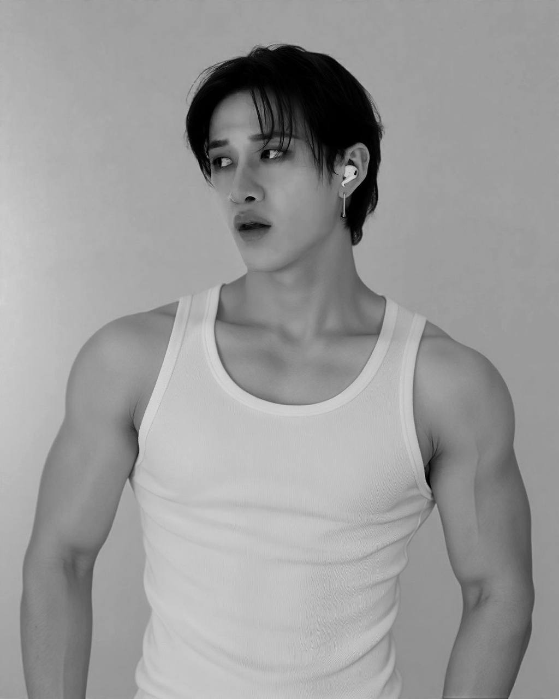

About Christopher Bang Chan
Christopher Bang (BangChan) was born on October 3, 1997. He is a singer, rapper, songwriter and producer, and the leader of Stray Kids. He is also a member of 3RACHA alongside Changbin and Han. Through songwriting and music production, he helps shape the group's sound.
Life and Career
- October 3, 1997: Born in Seoul, South Korea
- 2018: He debuted with Stray Kids with the EP I am NOT.
- 2019: He participated in the group's Clé series of releases.
- 2020: Stray Kids released their first full-length album, GO LIVE.
Musical Contributions
- Writing lyrics for Stray Kids songs.
- Composing and producing music as part of 3RACHA.
- Performing as a singer and rapper.
- Helping shape the group's musical identity.